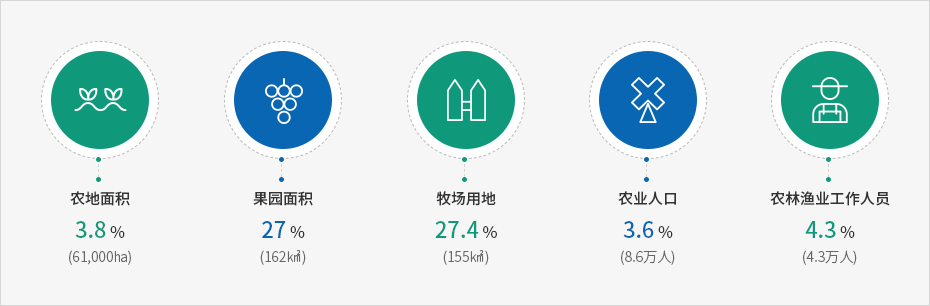
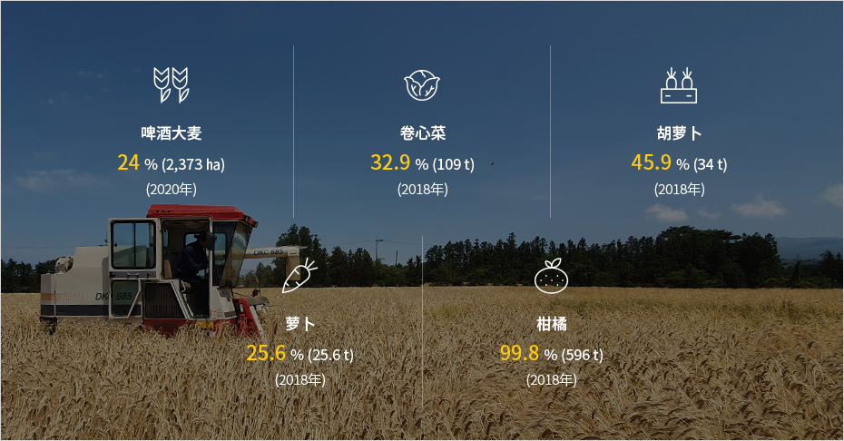

第一产业
农业在济州占地面积最广，既是济州的传统产业，也是经济支柱产业。
虽然济州地区生产总量（GRDP）仅占全国的1%，但济州的第一产业非常发达，蔬果产量占全国产量的7.7%（2018年）。
济州是韩国重要的农水畜产品生产基地，尤其盛产卷心菜（全国32.9%）、胡萝卜（全国45.9%）、萝卜（全国25.6%）和柑橘（全国99.8%）等作物，生猪饲养量也占全国的5.3%。
这是因为济州拥有清洁的自然环境、火山岛的优质土壤、适宜的气候，具备常年生产优质农水产品的最佳条件，深受韩国消费者青睐。
济州第一产业资源的全国占比


